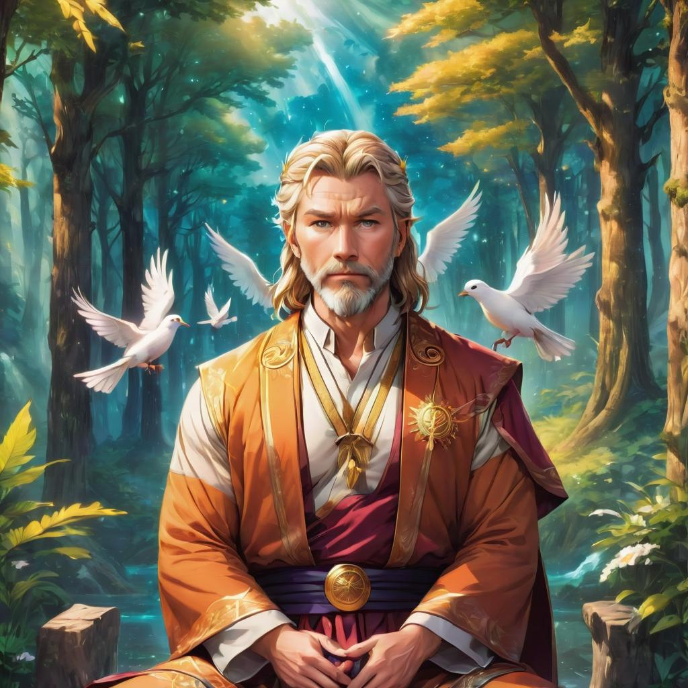
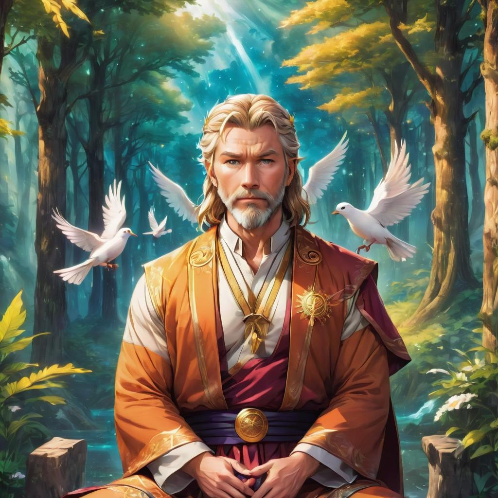

SIF

Amidst the rich tapestry of Norse mythology, Sif emerges as a figure of grace, beauty, and abundance, embodying the essential virtues of fertility and harvest. Revered as the golden-haired goddess of the fields, she holds a sacred place within the pantheon of Asgard, symbolizing the bountiful blessings of the earth and the cyclical rhythms of nature. Through her mythic narrative and divine attributes, Sif exemplifies the enduring connection between humanity and the natural world, inspiring reverence and adoration among gods and mortals alike. Born of the earth itself, Sif is said to have sprung forth from the fertile soil of Midgard, bearing locks of shimmering gold that rival the radiance of the sun. As the wife of the thunder god Thor, she embodies the union of sky and earth, serving as a potent symbol of fertility and renewal. Together with her husband, Sif oversees the cycles of planting and harvest, ensuring the abundance of crops and the prosperity of mortal settlements throughout the Nine Realms.
Central to Sif's mythology is her role as the guardian of the grain and the patroness of agriculture, tasked with nurturing the crops that sustain both gods and mortals alike. Through her benevolent influence, fields flourish with golden wheat, orchards burst forth with ripe fruit, and meadows teem with vibrant wildflowers, enriching the lives of all who dwell within her domain. Sif's divine touch ensures the fecundity of the land and the sustenance of life, embodying the eternal cycle of growth, death, and rebirth. Moreover, Sif's association with beauty and fertility extends beyond the agricultural sphere, encompassing the realm of human relationships and emotional fulfillment. As a beloved wife and devoted mother, she epitomizes the virtues of love, loyalty, and devotion, serving as a beacon of hope and inspiration for mortal women seeking happiness and fulfillment in their own lives. Her gentle demeanor and compassionate heart endear her to both gods and mortals alike, fostering harmony and unity within the divine family of Asgard.
Despite her prominence within Norse mythology, Sif's character is often overshadowed by the exploits of her more illustrious counterparts, such as Thor, Loki, and Odin. Nevertheless, her quiet strength and steadfast resilience serve as a testament to her enduring significance within the pantheon of Asgard, reminding us of the vital role played by goddesses in shaping the destiny of the cosmos. Through her myths and legends, Sif invites us to honor the sacred bond between humanity and the natural world, cultivating reverence for the earth and gratitude for its abundant gifts. In conclusion, Sif stands as a luminous figure within the realm of Norse mythology, embodying the timeless ideals of fertility, beauty, and abundance. As the golden-haired goddess of the fields, she bestows her blessings upon the earth, enriching the lives of gods and mortals alike with her boundless grace and generosity. Through her myths and legends, Sif inspires us to cultivate harmony with the natural world, nurturing the seeds of compassion, love, and renewal that lie within us all.
 
